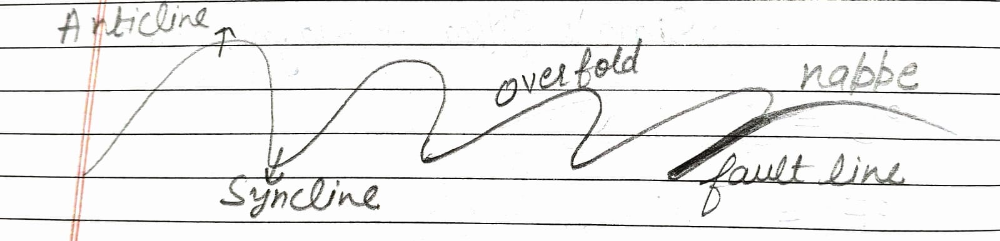

EARTH
Earth is 4500 Million years old.
Crust → 0 – 100 km
Mantle → 100 – 2900 km
Core → 2900 – 6370
- Outer Core : 2900 – 5100
- Inner Core : 5100 – 6370 km
Lithosphere : It contain crust and magma that is in mantle.
Mantle contain Mesosphere and Asthenosphere.
Core : It contain Barysphere.
Sial : Silica + Aluminium = 2.7 density
Sima : Silica + Magnesium = 3 density
°C = 5/9 (F – 32)
°F = 9/5 C – 32

Firstly there is only one continent called PANGEA and left this water named
Super Ocean → panthalassa
Theories
1912 – Continental Drift Theory : By Alfred Wegener
1960–62 – Tectonic Plate Theory
1960–62 – Convectional Current Theory : Arthur Holmes
CRUST
Igneous → Sedimentary → Metamorphic
1. Igneous
- Intrusive (Always in crystalline form)
- Extrusive
example of intrusive : granite, diorite & gabbro, basalt
2. Sedimentary
(Always in layer form)
Become with dead plants, dead animals and all other waste.
exp : Sand stone, lime stone, shale stone, clay stone
3. Metamorphic
(Formed with igneous or sedimentary)
change + chemical reaction of heat pressure
When any igneous, sedimentary rock change their state then metamorphic rock formed.
example :
- clay → slate
- lime stone → marble
- sand stone → quartzite
- granite → gneiss
- shale → schist
- coal → graphite
Equatorial Diameter – polar diameter of Earth = 43 km

Also called plastic layer
Moho Discontinuity : Border b/w crust & mantle
Gutenberg discontinuity : Border b/w mantle & core

Oceanic crust
Continental crust → thicker
Density
Sial : 2.7
Sima : 3
Core : 13
Earth’s Average Density : 5.5
Venus is twin of earth so have density : 5.7